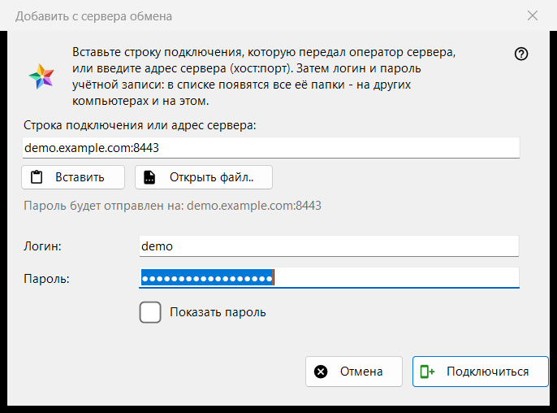
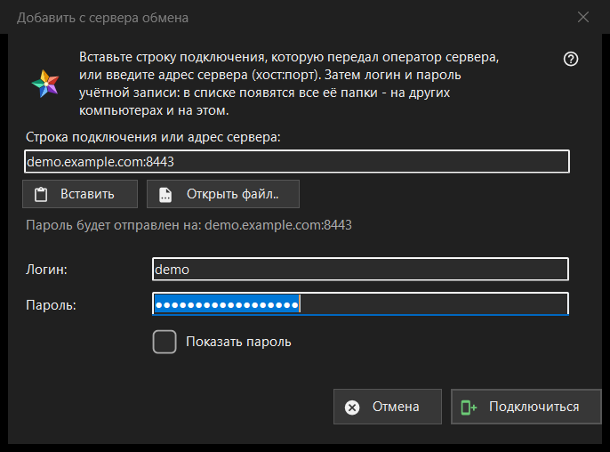

Добавить с сервера обмена
Назначение
Подключает этот компьютер к учётной записи на сервере обмена, чтобы в списке ресурсов появились папки всех устройств этой учётной записи. Окно открывается кнопкой «Добавить с сервера обмена..» в разделе «Мои устройства» списка ресурсов, а также когда вы перетаскиваете на просмотрщик строку подключения или файл либо набираете строку в поле папки.


Порядок действий
- Вставьте строку подключения, которую передал оператор сервера, введите адрес в виде хост:порт или нажмите «Открыть файл..».
- Проверьте строку «Пароль будет отправлен на: ..»: только на этот адрес уйдёт пароль.
- Введите логин и пароль.
- Нажмите «Подключиться».
- Если программа спросит о сертификате сервера, сверьте отпечаток с тем, который назвал оператор.
Элементы окна
Строка подключения или адрес
Верхнее поле принимает строку подключения (она начинается с FMSEXCH1:) или адрес вида хост:порт. «Вставить» заполняет его из буфера обмена - из текста или из картинки с QR-кодом, а «Открыть файл..» читает файл .fmsexch или картинку с QR-кодом. Вставка лишь заполняет форму: ничего не отправляется, пока вы не нажмёте «Подключиться». Строка под полем показывает, куда уйдёт пароль; веб-адрес, код общей папки или повреждённая строка отклоняются там понятными словами.
Логин и пароль
«Логин:» заполняется из строки, если он в ней есть. «Пароль:» скрыт, «Показать пароль» его показывает. При нажатии «Подключиться» поля пароля очищаются раньше, чем с компьютера уйдёт первый байт. Строка состояния показывает ход подключения и при неудаче причину: логин или пароль не подошли, слишком много попыток, сервер не отвечает.
Строка-приглашение
Строка-приглашение уже называет сервер и переключает окно на создание учётной записи: появляются «Пароль ещё раз:» и пояснение о правиле для пароля (не короче 10 символов, с заглавной и строчной латинскими буквами и цифрой), а кнопка называется «Создать учётную запись». Последнее слово по правилу за сервером.
Сертификат сервера
Если сертификат неизвестен, вопрос показывает его отпечаток и спрашивает, доверять ли серверу и запомнить ли его; ответ по умолчанию «Нет». Если строка называет один отпечаток, а сервер предъявляет другой, показываются оба, ничего не запоминается и пароль не отправляется.
Повторный вход
Когда окно открыто для существующей записи сервера, чтобы войти заново, адрес и логин показываются только для чтения, а опорой доверия служит отпечаток, который эта запись уже помнит.